Stem borer (Lepidoptera: Tortricidae) in Bidens
| Record no.: | 0096 |
|---|---|
| Feeding guild: | Stem borer |
| Taxonomy: | Lepidoptera: Tortricidae: cf. Epiblema otiosana |
| Stages observed: | trace, larva |
| Distribution observed: | IA |
| Hosts in Bidens: | undetermined B. sp. (beggarticks) |
I found a young larva tunneling in a living stem in late July, and a mature or nearly mature larva overwintering in its tunnel in the pith of a dead stem in winter. Both of these are tentatively placed to Tortricidae based on similarities with confirmed tortricids from other hosts, and the most likely identification is Epiblema otiosana, which has been well documented by other workers as a stem borer in this host (see below).
Interestingly, many dead stems of the host are raided by birds in the dormant season, apparently in order to find these larvae overwintering inside. In one wetland I explored in winter, birds had drilled repeatedly into hundreds of robust hostplant stems that were still standing from the previous growing season, representing an overwhelming and systematic predatory effort.
At a different location, a tunnel evidently made by this insect in one dead stem contained a parasitoid wasp larva with a distinctively striped head capsule, along with what appeared to be a remnant head capsule of the host larva. I reared an adult wasp from the parasitoid larva.
Decker (1932) describes the life history of this moth in detail, including parasitoid fauna, and Smiley (2019a&b) provides excellent photographs of several life stages.
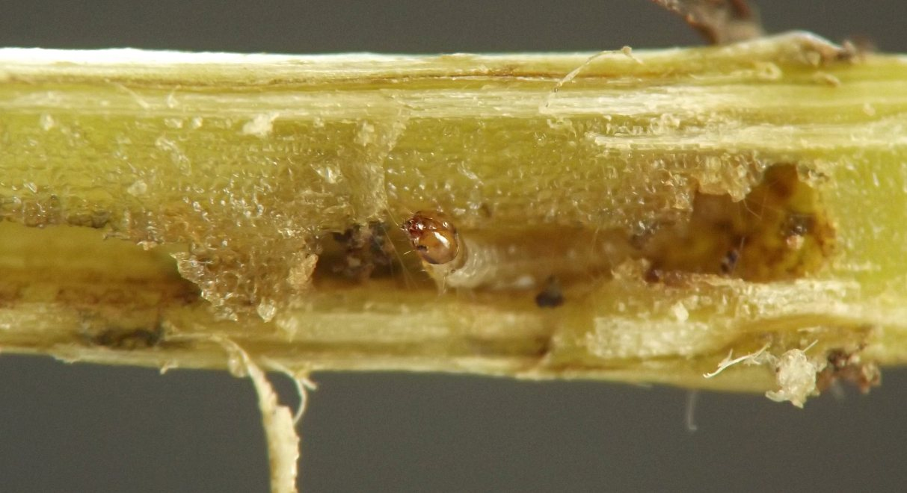
 Prev
Prev
{kind=link}
{kind=link}
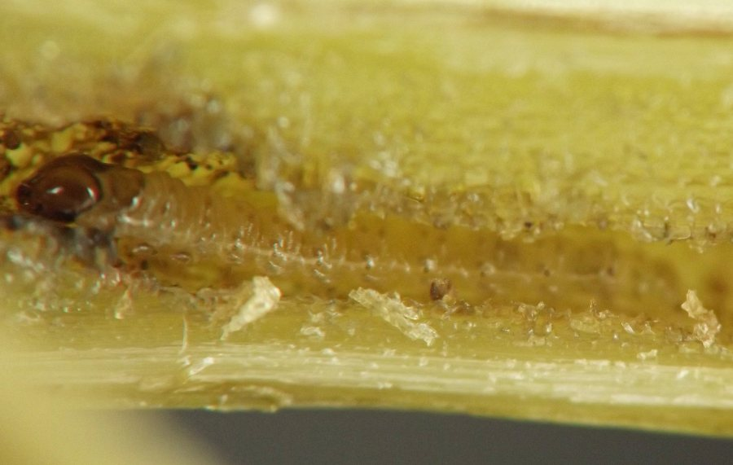
{kind=link}
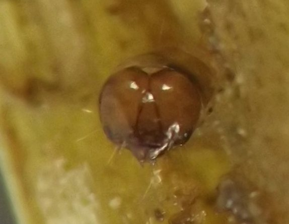
{kind=link}
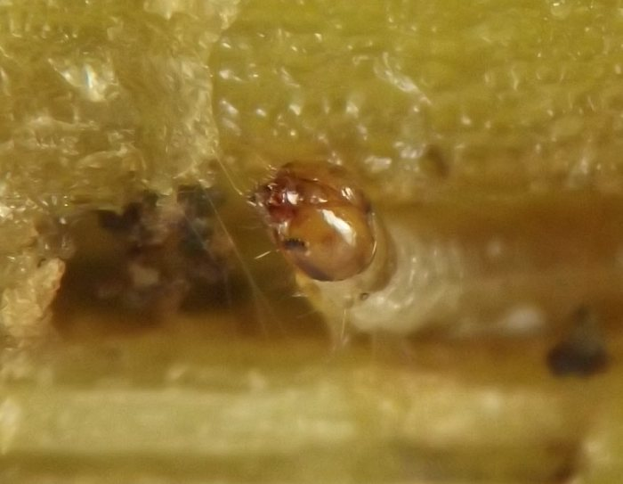

{kind=link}
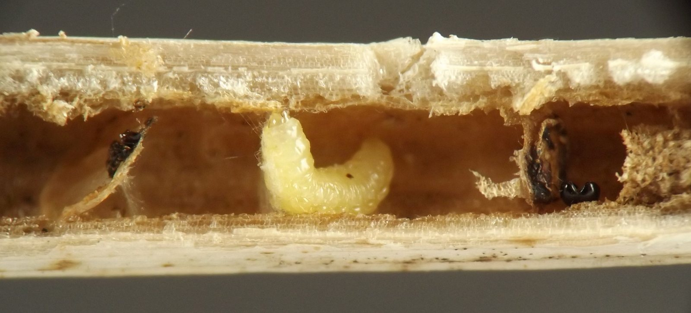
{kind=link}
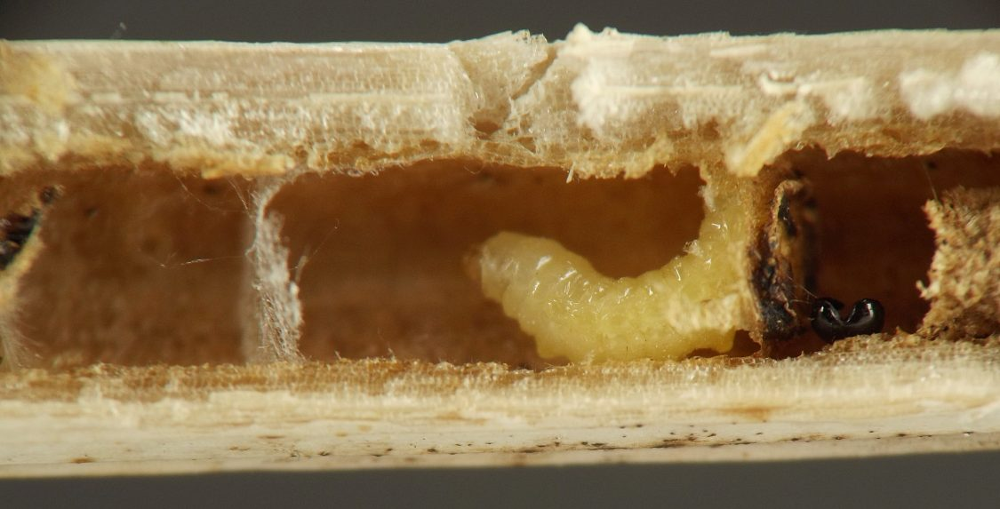
{kind=link}
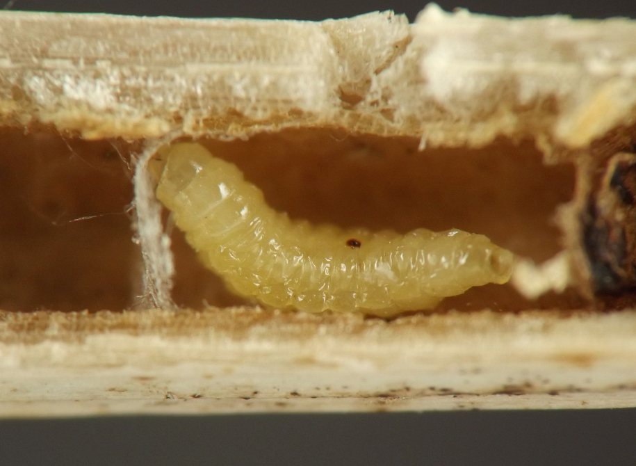
{kind=link}
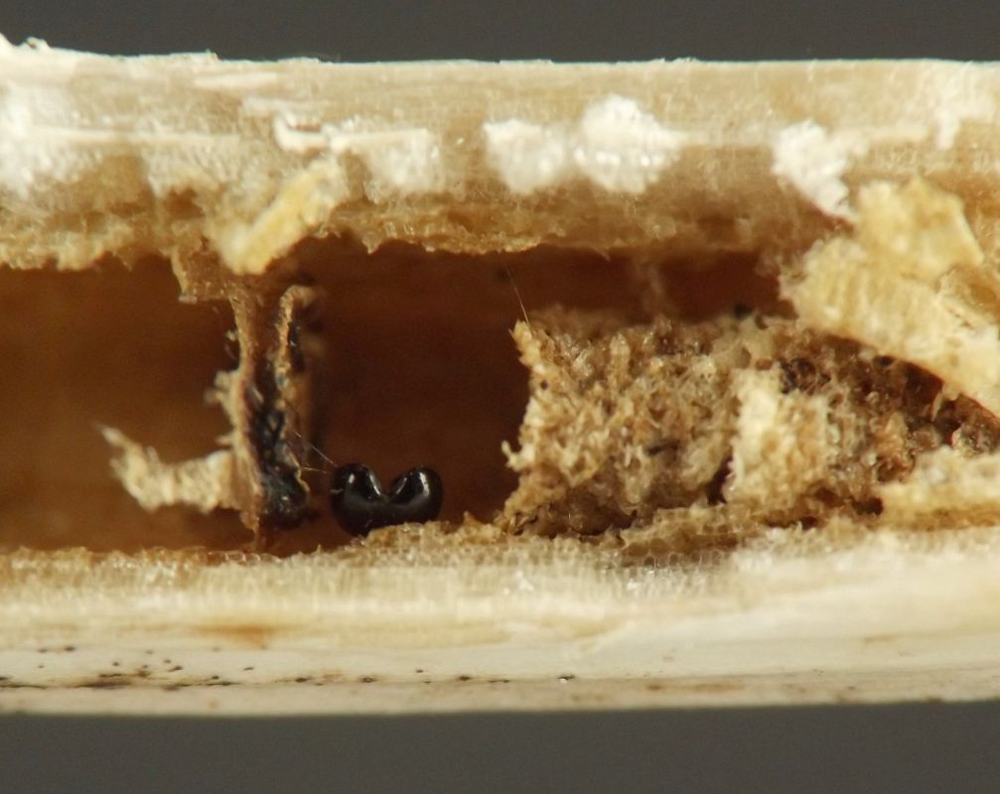
{kind=link}
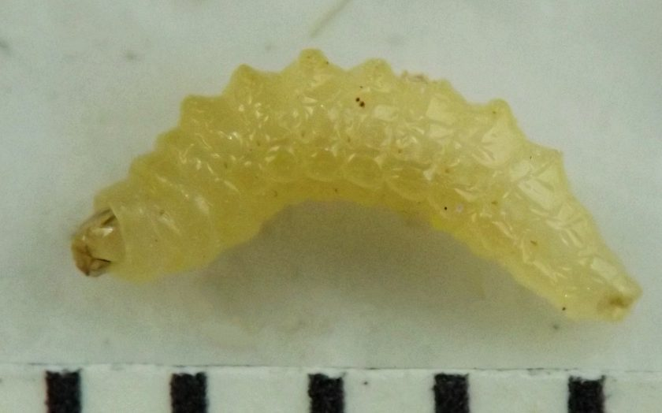
{kind=link}
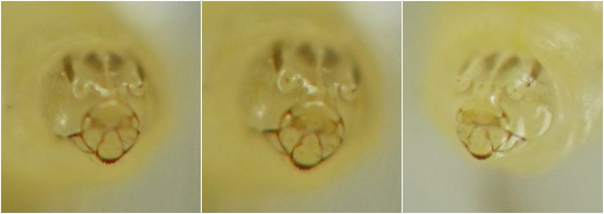
{kind=link}
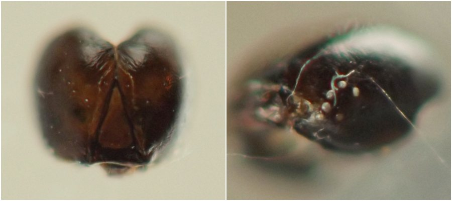
{kind=link}
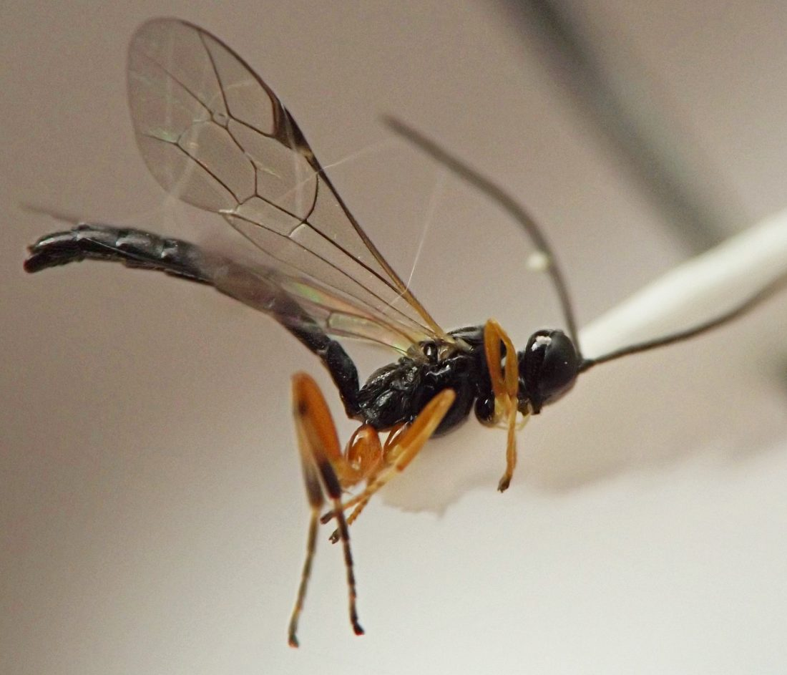
- Decker, G.C. 1932. Biology of the Bidens borer, Epiblema otiosana (Clemens) (Lepidoptera, Olethreutidae). Journal of the New York Entomological Society 40(4): 503-509.[return to in-text citation]
- Smiley, G. 2019a. Epiblema otiosana. Contributor post at BugGuide.net. Retrieved July 2, 2024 from https://bugguide.net/node/view/1706352. [return to in-text citation]
- Smiley, G. 2019b. Epiblema otiosana. Contributor post at BugGuide.net. Retrieved July 2, 2024 from https://bugguide.net/node/view/1725111.
Page created: February 10, 2026. Last update: April 4, 2026